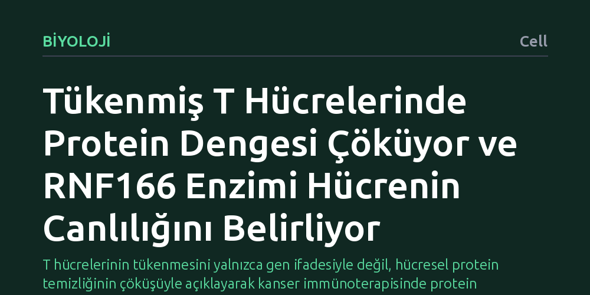

BIYOLOJI · Cell · 2026-10-26
Araştırmacılar, bağışıklık sisteminin kanserle savaşırken işlevini yitiren T hücrelerindeki moleküler değişiklikleri protein düzeyinde inceledi. Çalışma, tükenen hücrelerde protein döngüsü ve yıkım dengesinin çöktüğünü, RNF166 adlı enzimin ise hücrenin tümöre karşı kalıcılığını doğrudan düzenlediğini ortaya koydu.
T hücrelerinin tükenmesini yalnızca gen ifadesiyle değil, hücresel protein temizliğinin çöküşüyle açıklayarak kanser immünoterapisinde protein dengesini hedefleyen yepyeni bir tedavi yaklaşımı sunuyor.

Kanser tedavisinde son yılların en dikkat çekici gelişmelerinden biri, vücudun kendi savunma mekanizmasını harekete geçiren immünoterapilerdir. Bu tedavilerde kilit rolü, tümör hücrelerini tanıyıp yok etmekle görevli T hücreleri üstlenir. Ancak tümör mikroçevresinde uzun süre savaşan bu hücreler, zamanla işlevlerini kaybederek hücresel bir yorgunluk ve tükenme evresine girer. T hücresi tükenmesi, bağışıklık sisteminin kanser hücrelerine karşı silah bırakmasına yol açarak tedavilerin başarısını ciddi biçimde sınırlar.
Bugüne dek araştırmacılar, bu tükenmişlik durumunu anlamak için çoğunlukla gen ifadesi düzeyindeki değişimleri, yani hücrenin hangi RNA kopyalarını ürettiğini inceledi. Ne var ki genetik talimatların varlığı, bu talimatlarla üretilen proteinlerin hücre içinde nasıl davrandığını ve ne kadar süre sağlam kaldığını her zaman açıklayamaz. T hücrelerinin neden havlu attığını tam olarak kavrayabilmek için, hücrenin asıl iş gören makineleri olan proteinlerin akıbetine ve hücre içi dengesine odaklanmak gerekiyordu.
Araştırmacılar, bu temel soruyu yanıtlamak amacıyla insan T hücrelerindeki tükenme sürecini moleküler düzeyde aydınlatan kapsamlı bir çoklu omik atlası oluşturdu. Çalışmada yalnızca gen kopyalarına bakılmadı; aynı zamanda hücredeki proteinlerin miktarı, yenilenme hızları ve protein yıkımını yöneten ubikitin mekanizmaları proteomik analizlerle eş zamanlı olarak haritalandırıldı.
Elde edilen proteomik bulgular, klasik gen ifadesi verileriyle karşılaştırılarak iki düzey arasındaki uyumsuzluklar detaylı biçimde incelendi. Bunun yanı sıra araştırmacılar, haritalama sürecinde öne çıkan ve proteinlerin yıkım için işaretlenmesinde görev alan RNF166 adlı E3 ubikitin ligaz enzimini mercek altına alarak bu molekülün T hücresi canlılığı ve tümör karşıtı işlevi üzerindeki etkilerini deneysel olarak analiz etti.
Çalışmanın ortaya koyduğu en temel bulgu, işlevini yitirmiş T hücrelerinde protein dengesinin (proteostazis) geniş çaplı bir çöküş yaşamasıdır. Gen ifadesi analizlerinin gözden kaçırdığı bu tabloda, tükenmiş hücrelerin protein döngüsünü ve protein yıkımını yöneten ubikitin mekanizmasını derinden yeniden yapılandırdığı görüldü. Hücre içinde hasarlı veya işlevi bitmiş proteinlerin temizlenememesi, savunma hücrelerinin yapısal bir kriz yaşamasına neden olmaktadır.
Araştırma ayrıca, bu çöküş sürecinde kritik bir düzenleyicinin varlığını ortaya çıkardı: RNF166 adlı E3 ubikitin ligaz enzimi. Bu enzimin, T hücrelerinin hayatta kalma süresini ve tümör hücrelerine karşı mücadele gücünü doğrudan kontrol ettiği saptandı. RNF166 üzerinden yürüyen bu düzenleme, protein temizliği ve geri dönüşüm dengesinin hücrenin kaderini nasıl belirlediğini açıkça göstermektedir.
Bu bulgular, kanser immünoterapisinde yıllardır süregelen yaklaşımlara önemli bir yenilik getirmektedir. Bağışıklık hücrelerinin tükenmesini önlemek için yalnızca hücre yüzeyindeki fren mekanizmalarını bloke etmek yeterli olmayabilir; hücrenin kendi içindeki protein temizleme ve yenileme fabrikasını da ayakta tutmak gerekmektedir. Proteostazis mekanizması, T hücrelerinin tümörle mücadelesini uzatmak için doğrudan hedeflenebilecek yeni bir müdahale ekseni sunmaktadır.
Bununla birlikte, ortaya konan bu mekanizmanın klinik bir tedaviye dönüşebilmesi için daha fazla çalışmaya ihtiyaç vardır. Bulguların insan T hücrelerinde gösterilmiş olması umut verici olsa da, RNF166 enziminin veya protein dengesinin hedeflenmesinin hastalarda güvenli ve etkili olup olmayacağı gelecekteki klinik araştırmalarla belirlenecektir. Yine de bu atlas, bağışıklık hücrelerimizin neden tükendiğini anlamamızda çok değerli bir temel oluşturmaktadır.